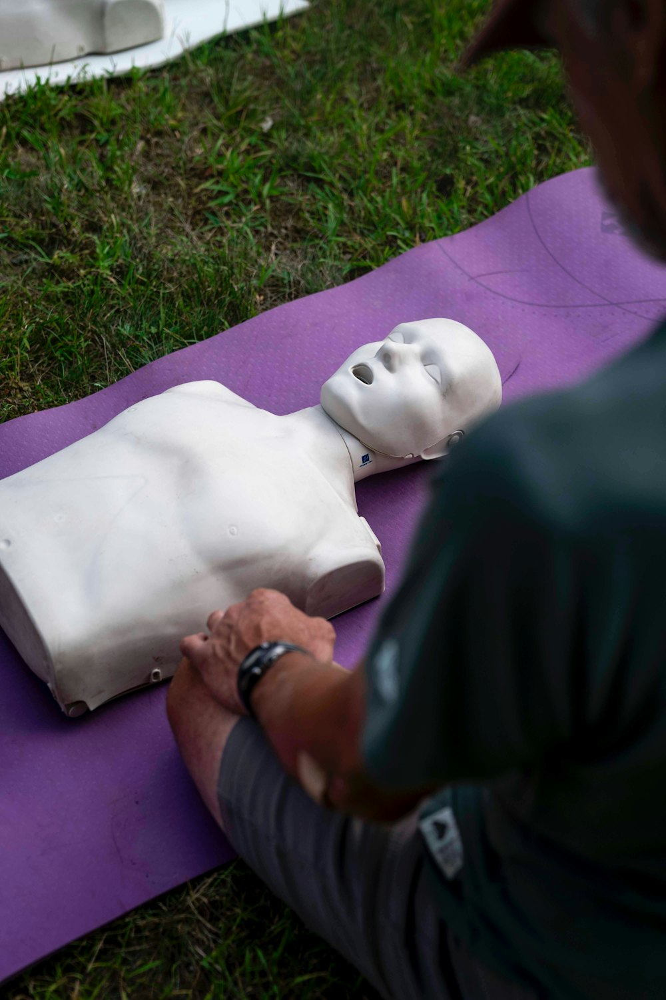
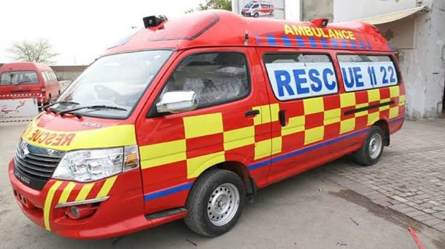
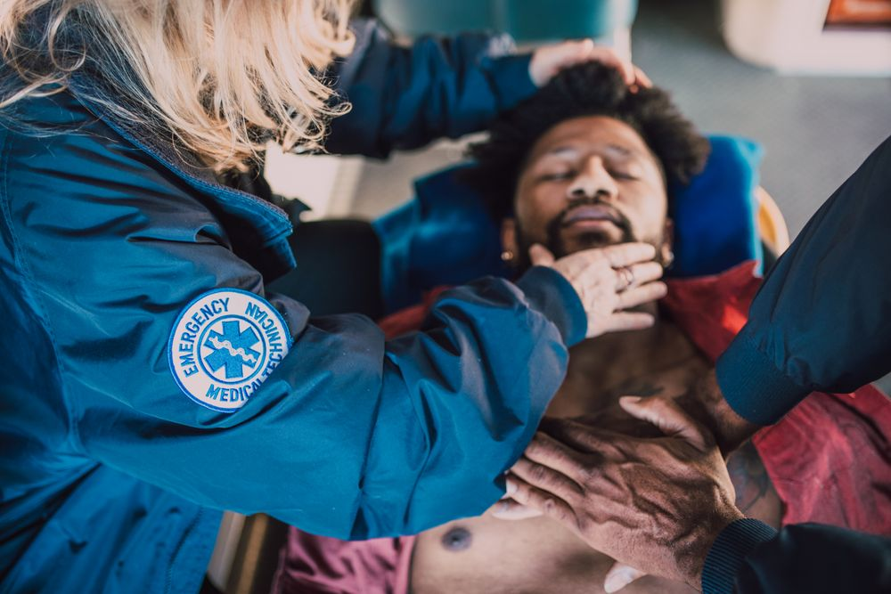
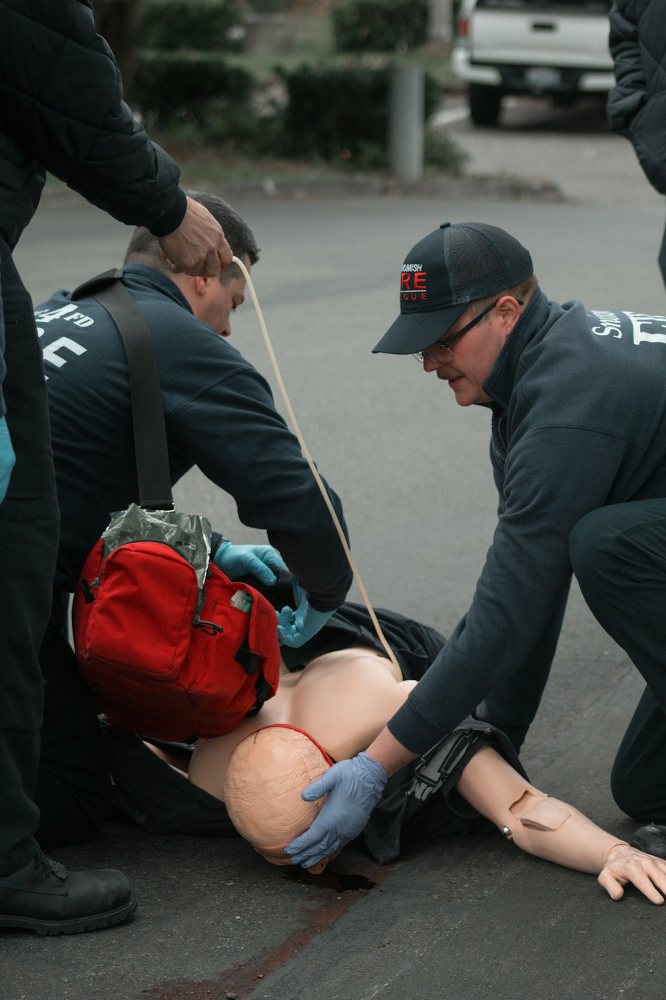
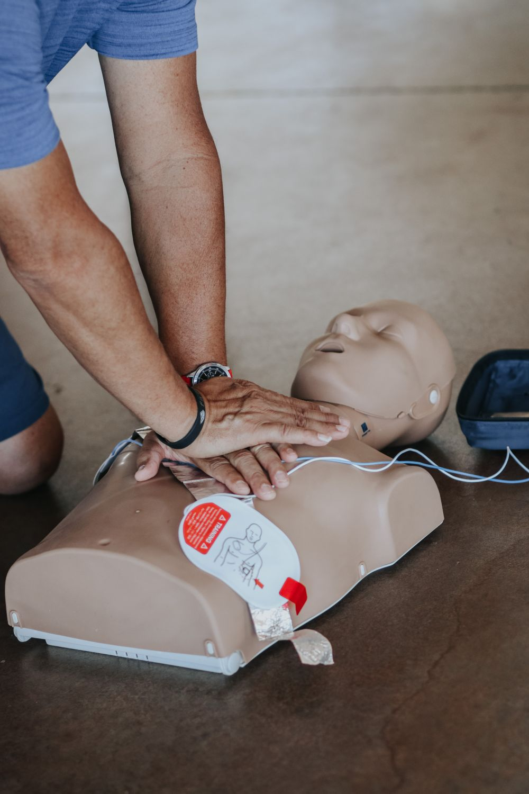
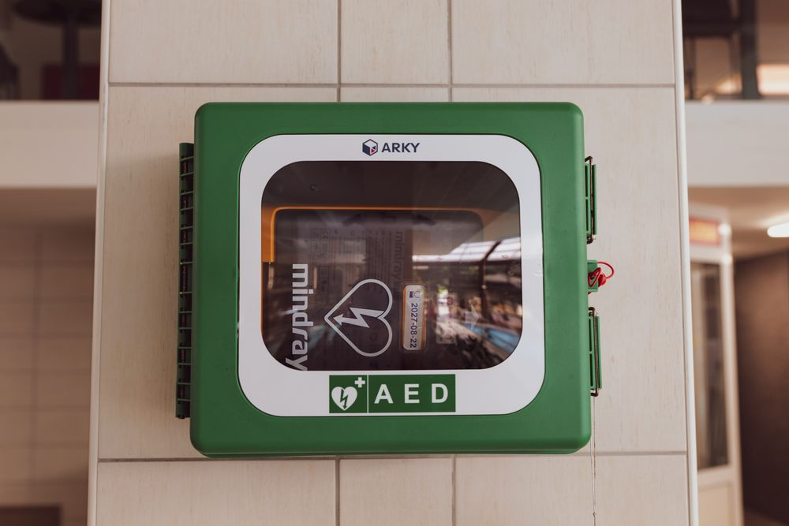
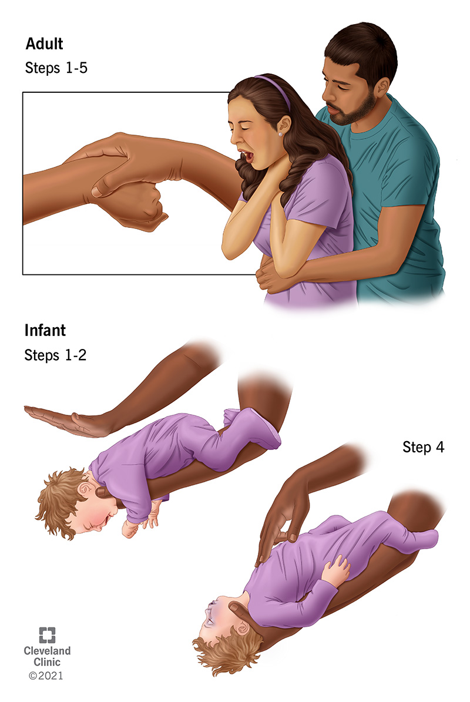
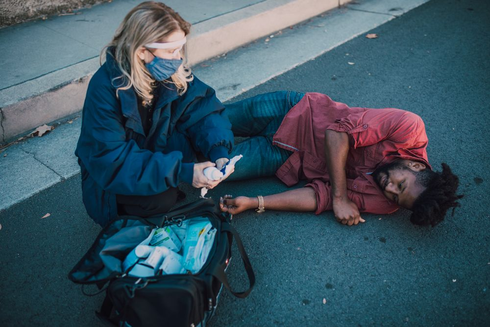
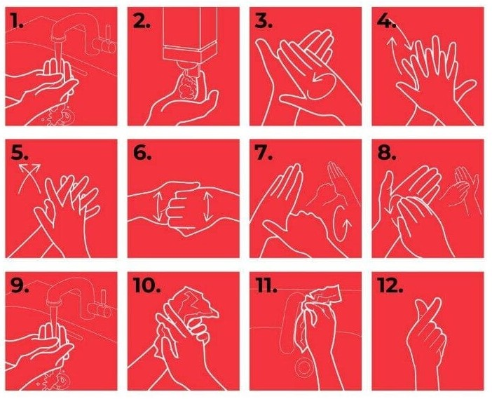
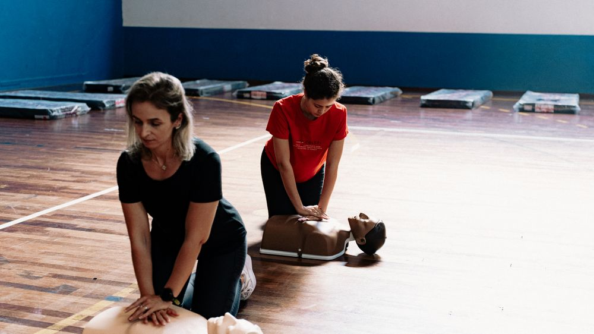

نہ مشین، نہ ہسپتال — بس دو ہاتھ، ایک آواز اور عمل کرنے کی ہمت۔ آج سیکھیں، عمر بھر کے لیے ساتھ رکھیں۔

جب کسی کا دل بیٹھ جائے تو ایمبولینس کو پہنچنے میں وقت لگتا ہے — لیکن آپ وہاں موجود ہوتے ہیں۔ پہلے چند منٹوں کا فیصلہ طے کرتا ہے کہ وہ شخص زندہ بچے گا یا نہیں۔ پاکستان میں سالانہ لاکھوں لوगوں کو دل کا دورہ پڑتا ہے — زیادہ تر گھر میں۔

سی پی آر کے بغیر دماغ مرنا شروع ہو جاتا ہے۔ ہر گزرتا منٹ بچاؤ کا موقع 10% کم ہو جاتا ہے۔
فوری سی پی آر سے بچنے کا موقع دگنا یا تین گنا بڑھ جاتا ہے۔ سی پی آر کرنے والا بھی مددگار ہے۔
اتنے ہی منٹوں میں دماغ کو نقصان پہنچنا شروع ہو جاتا ہے — اکثر ایمبولینس سے پہلے۔ ہر سیکنڈ شمار ہے۔
اگر سی پی آر فوراً شروع ہو تو بچنے کا امکان 70% تک پہنچ سکتا ہے — بغیر سی پی آر صرف 10%۔
پہلی دو کڑیاں آپ ہیں۔ پوری زنجیر آپ کے شروع کرنے پر کھڑی ہوتی ہے۔ آپ کا ایک فیصلہ — کسی کی پوری زندگی۔
بجلی، ٹریفک، آگ یا جانور — مدد دینے سے پہلے خود محفوظ رہیں۔ محفوظ ماحول = مؤثر مدد۔
«کیا آپ ٹھیک ہیں؟!» — دونوں کانوں کے پاس، صاف آواز میں۔ اگر کوئی جواب نہ دے تو دوبارہ پکاریں۔
ٹھونگ کر کسی بھی حرکت یا آواز کے جواب کا خیال رکھیں۔ ٹھونگنا آہستہ نہیں — زور سے۔
غیر ہوشیار سمجھ کر فوراً اگلے مرحلے پر بڑھیں — انتظار نہ کریں۔ ایک سیکنڈ بھی قیمتی ہے۔

کسی ایک کو اشارہ کر کے کہیں: «آپ — 1122 پر کال کریں!» یہ نہ سمجھیں کہ کوئی اور ضرور کرے گا۔ بystander اثر سب کو روک دیتا ہے — آپ فیصلہ کریں۔
«ایک شخص بے ہوش ہے اور سانس نہیں لے رہا۔ مقام: [اپنی جگہ کا نام]۔ ایمبولینس بھیجیں۔ میرا نمبر [فون نمبر] ہے۔» — اپنی طرف سے فون نہ بند کریں۔ اسپیکر آن رکھیں۔
مقام واضح بتائیں · فون نمبر بتائیں · اسپیکر آن رکھیں · ہدایات پر عمل کریں · فون نہ بند کریں

سینے کے پاس گھٹنے ٹیک کر بیٹھیں۔ سر پیچھے جھکا کر ٹھوڑی اوپر اٹھائیں — سانس کی نالی کھولیں۔ زیادہ سے زیادہ 10 سیکنڈ — گنتی شروع کریں…
کسی تیز دھن کی تال پر دبائیں — مثلاً Stayin’ Alive جیسی رفتار پر۔ ہر دھچکے کے بعد سینہ مکمل اوپر آنے دیں۔ جب تک مدد نہ پہنچے، رکیے نہیں۔

بغیر سانسوں، صرف مسلسل دھچکے بھی جان بچاتے ہیں۔ منہ سے منہ ممکن نہ ہو تو صاف کپڑا درمیان میں رکھیں — مگر جراثیم کا خوف جان دینے نہ دیں۔
جذباتی نہ ہوں: دھچکے لگائیں۔ سانس دینا ضروری نہیں — مسلسل دھچکے ہی کافی ہیں۔
ہسپتالوں، ایئرپورٹوں اور کچھ عوامی عمارتوں میں ملتا ہے۔ یہ خود آواز میں ہدایت دیتا ہے — بس آواز سنیں۔ ضرورت پڑنے پر ہی جھٹکا دیتا ہے؛ یہ بند دل کو نقصان نہیں پہنچا سکتا۔
سبز بٹن دبائیں، ہدایات سنیں۔ آپ کو صرف آواز سننی ہے۔
پیڈ پر بنی تصویر کے مطابق۔ ایک پیڈ دائیں سینے کے اوپر، دوسرا بائیں نیچے۔
تجزیہ یا جھٹکے کے دوران کوئی مریض کو نہ چھوئے۔ سب دور ہو جائیں۔
جھٹکے کے بعد بھی دھچکے جاری رکھیں۔ ای ی ڈی ہر 2 منٹ بعد دوبارہ تجزیہ کرے گا۔
چھوٹے بچوں کے لیے چھوٹے پیڈ استعمال کریں — اگر موجود نہ ہوں تو بڑے پیڈ بھی چلیں گے۔


کھانس سکتے یا بول سکتے ہیں تو کھانسیں آنے دیں۔ پیٹھ پر نہ ماریں۔ خود کو بچائیں۔
پیچھے کھڑے ہوں۔ ناف کے اوپر مٹھی بند کریں، انگوٹھا اندر کی طرف۔ کندھے سے تکھانے لگائیں۔
تیز، زوردار اوپر اور اندر کی طرف جھٹکے — حرف J جیسی حرکت۔ 5 بار جھٹکے دیں۔
یا شخص بیہوش ہو جائے ← سی پی آر شروع کریں۔ پیٹھ پر 5 ٹھپکے اور 5 جھٹکے — باری باری۔
نوزائیہ: 2 انگلیوں سے سینے پر 5 دبائیں۔ بچہ: 5 پیٹھ کے ٹھپکے + 5 پیٹ کے جھٹکے۔
سانس آرہی ہو مگر ہوش نہ ہو؟ مریض کو طرف لٹا دیں — زبان پیچھے نہیں گرے گا، اُلٹی آسانی سے باہر نکلے گی۔ یہ پوزیشن سانس کی نالی کھولی رکھتی ہے۔
مریض کا منہ اپنی طرف رکھیں۔
ہتھیلی اوپر کی طرف رکھیں۔
ہتھیلی نیچے کی طرف، کہینوں کے قریب۔
پاؤں زمین پر سیدھا رکھیں۔
آہستہ سے — جھٹکے نہ دیں۔
ایمبولینس آنے تک اکیلا نہ چھوڑیں۔ ہر کچھ سیکنڈ بعد سانس چیک کریں۔

ہمارے ہاتھ ہر جگہ چھوتے ہیں — دروازہ، سکول، دکان، بازار اور بیت الخلا — اور اسی راستے سے جراثیم ایک شخص سے دوسرے تک پہنچتے ہیں۔ صابن کے ساتھ ہاتھ دھونا سستا اور مؤثر ترین طریقہ ہے۔ یہ عادت ہر گھر کے لیے ہے، ہر سکول کے لیے — اور ہنگامی صورتِ حال میں بھی پہلا قدم یہی ہے۔
ہاتھ گیلے کریں، صابن لگائیں، کم از کم 20 سیکنڈ رگڑیں۔
ہاتھوں کی پشت · انگوٹھے · انگلیوں کے درمیان · ناخنوں کے نیچے · ہتھیلیوں کے درمیان۔
تولیے یا صاف کپڑے سے — گندے یا پرانے کپڑے سے نہیں۔
منہ، آنکھ یا چہرے پر صابن نہ لگائیں — اور پینے کے بلورے سے ہاتھ نہ دھویں۔

صابن سے دھونے کا کم از کم وقت — سیکنڈ۔ تیزی سے دھونا کافی نہیں، مکمل طریقہ ضروری ہے۔
الکحل والا ہینڈ سینیٹائزر — جب صابن اور صاف پانی دستیاب نہ ہوں۔
کسی کو چھونے سے پہلے اور بعد میں ہاتھ دھویں یا دستانہ پہنیں۔ یہی عادت زخم اور ہر قسم کی پہلی مدد کو محفوظ بناتی ہے۔
ریبیس کا خطرہ کاٹے کے سائز میں نہیں — پہلا قدم کتنی جلدی ہوا اسی میں ہے۔ زیادہ تر کاٹے بچوں کو لگتے ہیں، اور آپ کو یہ نہیں معلوم کہ کب یہ آپ کے ساتھ نہ ہو۔ اسی لیے یہ ہر فرد کو سیکھنی چاہیے۔
بہتے ہوئے صاف پانی اور صابن سے زخم دھویں — کم از کم 15 منٹ تک، ہاتھ ہلاتے رہیں۔ یہ سب سے مؤثر قدم ہے۔
خون بہنے دیں تاکہ جراثیم باہر نکلیں، پھر زخم پر صاف کپڑا یا پٹی باندھیں۔
فون پر بتائیں کہ کتے نے کاٹا ہے۔ ویکسین اور امیونوگلوبلین کا فیصلہ ڈاکٹر کرے گا — خود فیصلہ نہ کریں۔
نگرانی ڈاکٹر کی سہولت سے ہو — لیکن ویکسین کا انتظار نہ کریں۔ بیلی کے کاٹنے پر تو ویکسین فوراً لگوائیں۔
مرچیں، تیکھا سامان یا کوئی گھریلو ٹوٹکا نہ لگائیں — اس سے وقت ضائع ہوتا ہے اور انفیکشن کا خطرہ بڑھتا ہے۔
پانی یا ہوا سے ڈر · شدید بے چینی اور گھبراہٹ · جسمانی جھٹکے · منہ سے زیادہ لالاب بہنا · بھاری بزہانی اور نیند نہ آنے۔
آگے آئیں اور ڈمی پر مشق کریں۔ آج ہر ایک دھچکے لگائے گا — کیونکہ ایک دن یہ کوئی اپنا ہی ہوگا۔
